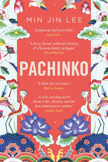
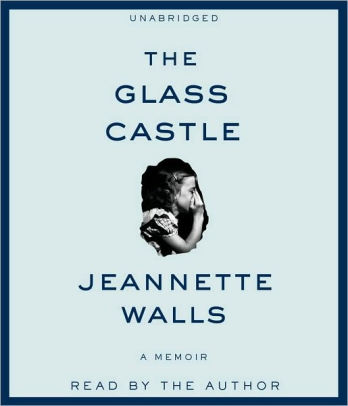
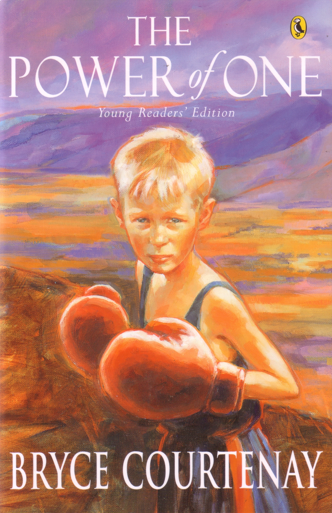

I have a background in Product and Marketing, and am now in Bali learning how to code.
I love kitesurfing, sailing and being outdoors. Find my favourite books below.
|  |
Pachinko - Min Jin LeeIn the early 1900s, teenaged Sunja, the adored daughter of a crippled fisherman, falls for a wealthy stranger at the seashore near her home in Korea. He promises her the world, but when she discovers she is pregnant--and that her lover is married--she refuses to be bought. Instead, she accepts an offer of marriage from a gentle, sickly minister passing through on his way to Japan. But her decision to abandon her home, and to reject her son's powerful father, sets off a dramatic saga that will echo down through the generations. Richly told and profoundly moving, Pachinko is a story of love, sacrifice, ambition, and loyalty. From bustling street markets to the halls of Japan's finest universities to the pachinko parlors of the criminal underworld, Lee's complex and passionate characters--strong, stubborn women, devoted sisters and sons, fathers shaken by moral crisis--survive and thrive against the indifferent arc of history. |
|  |
The Glass Castle: A Memoir - Jeannette WallsThe Glass Castle is a remarkable memoir of resilience and redemption, and a revelatory look into a family at once deeply dysfunctional and uniquely vibrant. When sober, Jeannette’s brilliant and charismatic father captured his children’s imagination, teaching them physics, geology, and how to embrace life fearlessly. But when he drank, he was dishonest and destructive. Her mother was a free spirit who abhorred the idea of domesticity and didn’t want the responsibility of raising a family. The Walls children learned to take care of themselves. They fed, clothed, and protected one another, and eventually found their way to New York. Their parents followed them, choosing to be homeless even as their children prospered. The Glass Castle is truly astonishing—a memoir permeated by the intense love of a peculiar but loyal family. |
|  |
The Power of One: A Novel - Bryce CourtenayIn 1939, as Hitler casts his enormous, cruel shadow across the world, the seeds of apartheid take root in South Africa. There, a boy called Peekay is born. His childhood is marked by humiliation and abandonment, yet he vows to survive and conceives heroic dreams–which are nothing compared to what life actually has in store for him. He embarks on an epic journey through a land of tribal superstition and modern prejudice where he will learn the power of words, the power to transform lives, and the power of one. |
This page has been coded during week 4 of the FullStack program @LeWagon. Blood, sweat and tears went into this page.